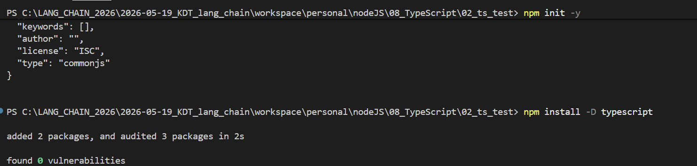
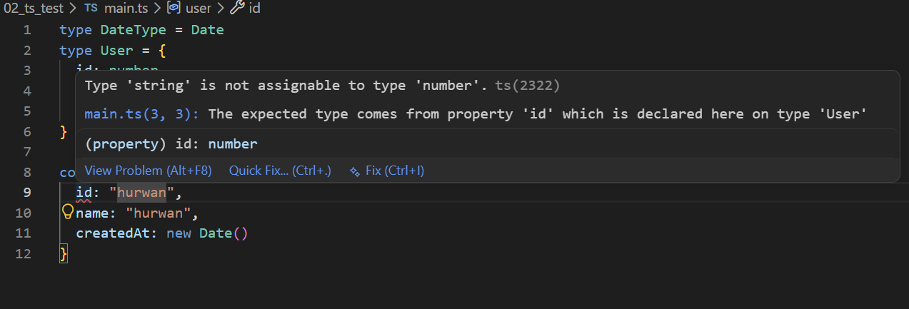
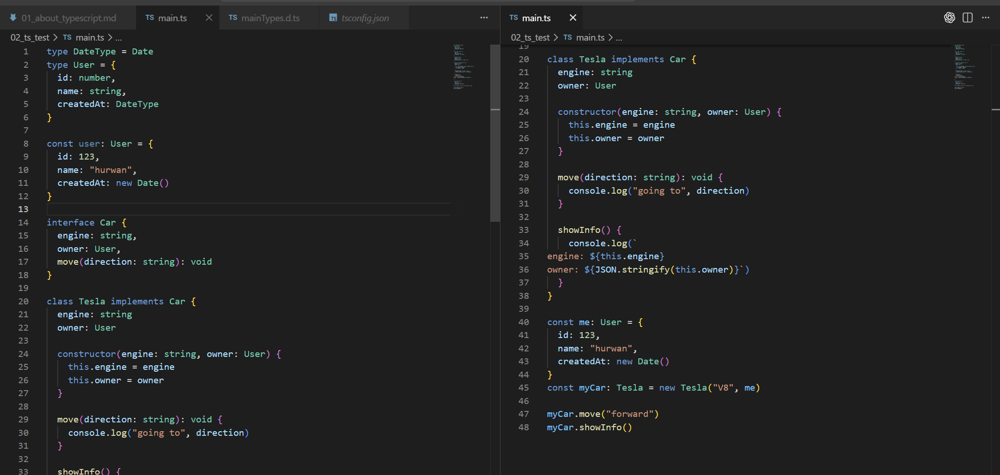
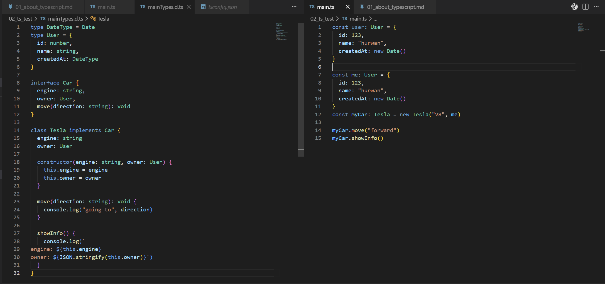
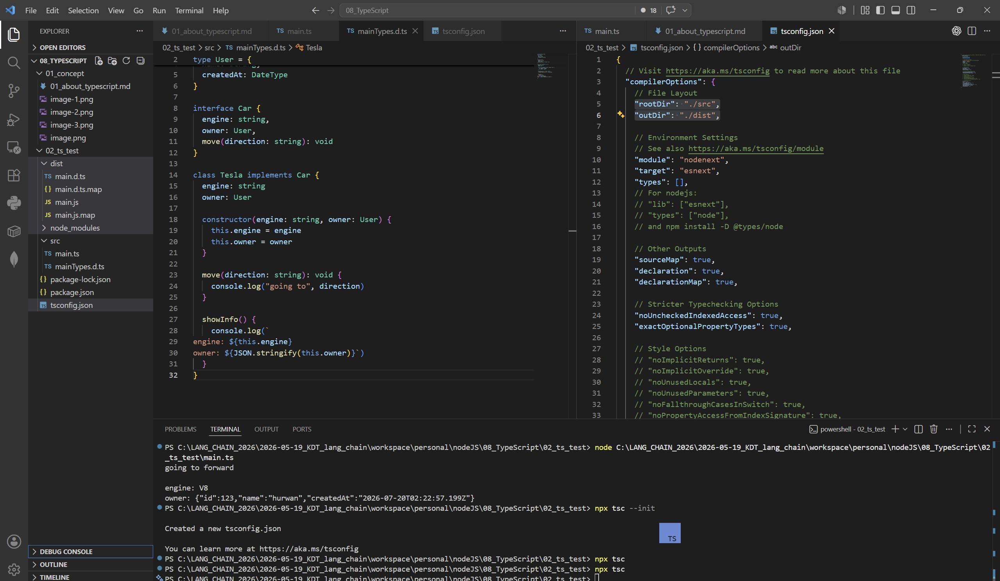

Node.js · TypeScript
타입스크립트 개념과 사용법
TypeScript의 개념, 컴파일러와 언어 서비스, 주요 문법과 실제 사용 흐름을 정리합니다.
gpt가 디자인 하기 전 원본
# 타입스크립트 개념과 사용법
이번에는 계속 관심이 있었지만 시급함이 있는건 아니였기에 간간히 찾아보면서 써왔던 `Typescript`에 대해서 개념을 파악하고 사용법을 정리해보려 합니다.
## 타입 스크립트란?
타입 스크립트는 `JavaScript`를 개발할 시 타입 정적 분석이 약한 부분에 대해서 타입을 명확히 명시해주며 경우에 따라 자동완성, 리팩토링 등까지 확인해주는 개발용 **언어**입니다.
위에서는 언어라 하였지만 타입 스크립트는 패키지 또는 컴파일러라고 표현할 수도 있습니다.
타입 스크립트는 공식 컴파일러와 관련 프로그램이 `typescript`라는 이름의 npm 패키지로 배포되게 됩니다. (`npm install -D typescript`)
해당 `install`을 실행한다면 `tsc`라는 Typescript 컴파일러(`ts`에서 `js`로)와 언어 서비스, 타입 선언 파일 등을 제공받을 수 있습니다. 컴파일을 하는 경우에는 `npx tsc`를 통해 사용이 가능합니다.
VSCode에서 타입스크립트를 사용할 수 있는 이유는 VSCode에서 기본적으로 TypeScript를 분석하는 언어 서비스가 들어있기 때문입니다. 예를 들어 다음과 같은 기능이 존재합니다.
- 빨간 밑줄
- 자동완성
- 함수 인자 표시
- 타입 추론
- 정의로 이동
- 이름 변경
## 타입 스크립트의 주요 문법
타입스크립트 문법은 크게 두 영역으로 구분됩니다.
- 타입 검사 (`: type`, `type`, `interface`)
- 실행 시 실제로 존재 하는 것 (`const`, `function`, `new`)
그중에서도 `class`는 실제로 사용됨과 동시에 타입으로도 사용 가능한 객체이자 타입입니다.
```typescript
// 기본적인 속성 넣기
const name: string = "hurwan"
const age: number= 21
// 함수 시그니처 넣기
function greet(name: string): string {
return `Hello ${name}!`
}
// 객체에 속성 넣기
const user: {
id: number,
name: string
} = {
id: 12,
name: "hurwan"
}
// 타입 자체를 만들기 (별칭)
type User = {
id: number,
name: string,
age: number,
createdAt: Date | null
}
// 특정 값만 허용하기
type status = "ready" | "pending" | "completed"
const paymentStatus: status = "ready"
// 복수 타입 허용
type UserId = number | string
const appleId = 1
const bananaId = "banana"
// 인터페이스 정의 (유니온, 문자열 등과 같은 타입이 가능한 일부를 못사용하지만 객체 형태 정의 및 확장에 쓰임)
interface User: {
id: number
name: string
greet(): string
}
// 인터페이스 implements
class UserImpl implements User {
id: number
name: string
constructor(id: number, name: string) {
this.id = id
this.namd = namd
}
/*
위 내용을
constructor(
public id: number,
public name: string
) {}
으로 축약 가능
*/
greet(): string {
console.log("hello", this.name)
}
}
```
## 실제 사용 예시
> 패키지 다운

> 타입 에러 확인

> `.d.ts` 작업 전 예제

> `.d.ts` 이관

> `npx tsc --init` 이후 `rootDir`, `outDir` 설정 및 `npx tsc`을 통한 js 빌드

## 결론
최종적으로 이와 같이 타입을 검사하지 않는 `JavaScript`의 강한 보조 패키지의 `TypeScript`에 대해서 알아보았습니다.
컴파일, 언어 규칙 등이 존재하며 직접 `js`를 실행하지는 않기때문에 애매한 경계에 있지만 최종적으로 정리를 하면
1. TypeScript는 언어 규칙과 컴파일러, 코드 검사 기능을 제공하는 언어가 맞다.
2. VSCode에서의 TypeScript에 의한 코드 정적 검사는 TypeScript 가 제공하는 Language Service를 이용하여 일어난다. VSCode 자체만으로 TypeScript 파일을 읽어서 동작하는 것과는 약간 다르다
3. 이번에 다루진 않았지만 `ESLint`보다 더 기초적인 부분을 탐지하며 코드 품질 등은 적극적으로 관리하지 않는다.타입 스크립트란?
이번에는 계속 관심이 있었지만 시급함이 있는건 아니였기에 간간히 찾아보면서 써왔던 Typescript에 대해서 개념을 파악하고 사용법을 정리해보려 합니다.
타입 스크립트는 JavaScript를 개발할 시 타입 정적 분석이 약한 부분에 대해서 타입을 명확히 명시해주며 경우에 따라 자동완성, 리팩토링 등까지 확인해주는 개발용 언어입니다.
위에서는 언어라 하였지만 타입 스크립트는 패키지 또는 컴파일러라고 표현할 수도 있습니다.
타입 스크립트는 공식 컴파일러와 관련 프로그램이 typescript라는 이름의 npm 패키지로 배포되게 됩니다. (npm install -D typescript)
해당 install을 실행한다면 tsc라는 Typescript 컴파일러(ts에서 js로)와 언어 서비스, 타입 선언 파일 등을 제공받을 수 있습니다. 컴파일을 하는 경우에는 npx tsc를 통해 사용이 가능합니다.
VSCode에서 타입스크립트를 사용할 수 있는 이유는 VSCode에서 기본적으로 TypeScript를 분석하는 언어 서비스가 들어있기 때문입니다. 예를 들어 다음과 같은 기능이 존재합니다.
- 빨간 밑줄
- 자동완성
- 함수 인자 표시
- 타입 추론
- 정의로 이동
- 이름 변경
타입 스크립트의 주요 문법
타입스크립트 문법은 크게 두 영역으로 구분됩니다.
- 타입 검사 (
: type,type,interface) - 실행 시 실제로 존재 하는 것 (
const,function,new)
그중에서도 class는 실제로 사용됨과 동시에 타입으로도 사용 가능한 객체이자 타입입니다.
// 기본적인 속성 넣기
const name: string = "hurwan"
const age: number= 21
// 함수 시그니처 넣기
function greet(name: string): string {
return `Hello ${name}!`
}
// 객체에 속성 넣기
const user: {
id: number,
name: string
} = {
id: 12,
name: "hurwan"
}
// 타입 자체를 만들기 (별칭)
type User = {
id: number,
name: string,
age: number,
createdAt: Date | null
}
// 특정 값만 허용하기
type status = "ready" | "pending" | "completed"
const paymentStatus: status = "ready"
// 복수 타입 허용
type UserId = number | string
const appleId = 1
const bananaId = "banana"
// 인터페이스 정의 (유니온, 문자열 등과 같은 타입이 가능한 일부를 못사용하지만 객체 형태 정의 및 확장에 쓰임)
interface User: {
id: number
name: string
greet(): string
}
// 인터페이스 implements
class UserImpl implements User {
id: number
name: string
constructor(id: number, name: string) {
this.id = id
this.namd = namd
}
/*
위 내용을
constructor(
public id: number,
public name: string
) {}
으로 축약 가능
*/
greet(): string {
console.log("hello", this.name)
}
}실제 사용 예시
패키지 다운

타입 에러 확인

.d.ts 작업 전 예제

.d.ts 이관

npx tsc --init 이후 rootDir, outDir 설정 및 npx tsc을 통한 js 빌드

결론
최종적으로 이와 같이 타입을 검사하지 않는 JavaScript의 강한 보조 패키지의 TypeScript에 대해서 알아보았습니다.
컴파일, 언어 규칙 등이 존재하며 직접 js를 실행하지는 않기때문에 애매한 경계에 있지만 최종적으로 정리를 하면
- TypeScript는 언어 규칙과 컴파일러, 코드 검사 기능을 제공하는 언어가 맞다.
- VSCode에서의 TypeScript에 의한 코드 정적 검사는 TypeScript 가 제공하는 Language Service를 이용하여 일어난다. VSCode 자체만으로 TypeScript 파일을 읽어서 동작하는 것과는 약간 다르다
- 이번에 다루진 않았지만
ESLint보다 더 기초적인 부분을 탐지하며 코드 품질 등은 적극적으로 관리하지 않는다.